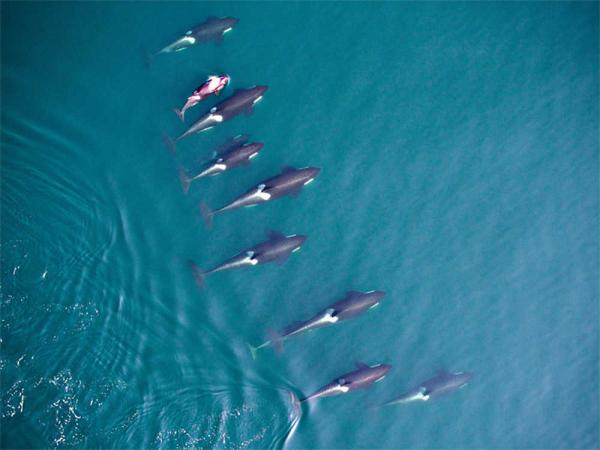
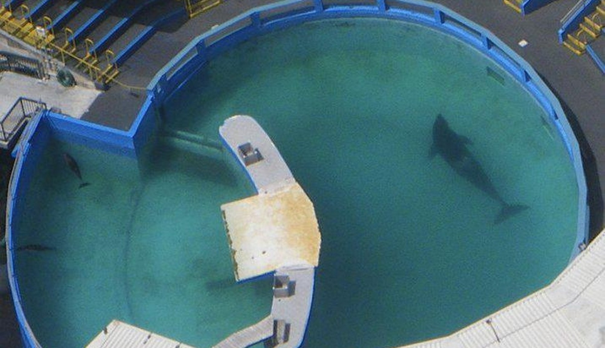

DOLPHINS
When I say dolphins, I am including several species that are known as whales but are technically dolphins such as killer whales, pilot whales, belugas, etc. One thing that needs to be understood about dolphins is that they are very social creatures, they survive and thrive through their familial relationships. Researchers are only beginning to realize the emotional capacity of these large-brained marine mammals. Yes, mammals, not fish.
Southern Resident Killer Whales
The Southern Resident Killer Whales are a group of orcas (AKA killer whales) whose habitat extends from the waters off British Columbia, Canada, throughout the Salish Sea in Washington, all the way down to the coast of California. Resident killer whales only eat fish, almost exclusively salmon, as opposed to the Transient orcas, that share the habitat, who eat other marine mammals. This population of orcas is made up of 3 pods, or family units, named J-pod, K-pod, and L-pod. There are 29 individuals in J-pod, 19 in K-pod, and 36 in L-pod for a total population of 84. This number does not include Lolita, who lives at Miami Seaquarium, who was taken from this family in 1970. The SRKWs were added to the endangered species list in 2005, yet the efforts to date have not been enough to see a permanent and significant increase in their population. They did have somewhat of a baby boom, from December 2014 through 2015. There are 8 surviving calves (orca babies) from that. Scarlet J50 was the first, in 2014, followed by Nova J51, Windsong L121, Sonic J52 (Scarlet's nephew), Magic L122, Kiki J53, Lazuli L123, and Dipper J54 (Kiki's nephew). I could go on and on about these guys, but for now I'll end with some interesting trivia. Orca females go through menopause, similar to human females, usually sometimes in their 40s. Also, Granny J2 is thought to be about 105 years old, the oldest known orca. For more information about the SRKWs go to Center for Whale Research, Orca Network or The Whale Museum.
Captive Orcas (watch Blackfish)
Lolita
Lolita was named Tokitae before captivity. She was taken from L-pod of the Southern Resident Killer Whales. It is thought that she was about 4 years old when she was captured on August 8, 1970 in Penn Cove, off Whidbey Island in Washington. 6 other young orcas were captured that day and sent off to various parks around the world, but today Lolita is the only surviving captive on the SRKWs. After being captured she was taken to Miami Seaquarium where she was to be a companion to Hugo, a fellow SRKW that had been captured previously. They were together until 1980, when Hugo committed suicide by crushing his skull against the side of the tank. She has seen no other orca since, but has some pacific white-sided dolphin tank mates that continuously harrass her. She is in a tiny, outdated concrete tank. She also has no protection from the blazing Miami sun and other elements. All of these things are in violation of multiple regulations. It wasn't until after the study of the SRKWs started, in 1976, that they realized Lolita was in fact part of L-pod. They came to this conclusion because each pod has a dialect, vocalizations unique to their family groups. The researchers were also able to conclude that Lolita's mother is Ocean Sun L25, who is thought to be about 88 years old and is alive and well, swimming with what's left of her family. After 46 years in captivity, it's time for Lolita to go home, to be able to retire in peace in her native waters, and have the possibility of reuniting with her mother and other distant relatives. For more information about Lolita go to Save Lolita.
Corky II
Corky was captured off the coast of British Colombia, Canada and is a member of the Northern Resident Killer Whales. She was also around 4 years old when she was captured in 1969. That makes her the longest surviving orca in captivity. After being captured she was sent to Marineland of the Pacific where she was placed with Orky II, who was also a NRKW and thought to be a cousin of hers. Corky was the first orca to become pregnant and give birth in captivity. During Corky's seventh pregnancy, both she and Orky were moved to Sea World San Diego, where she never became pregnant again. Seven pregnancies, and the longest any of her calves lived was 46 days. Also residing in Sea World San Diego was Kandu V, who bore Orky a surviving calf 3 days before he died. This calf was Orkid (Orky's kid). Corky showed a lot of interest in the new calf, and Kandu V was not happy about it. In 1989, Kandu attempted to rake (a show of dominence by scratching with teeth) Corky and ended up rupturing an artery in her own jaw, causing her death after a 45-minute hemorrhage with her 11 month old calf watching. After Kandu's death, Corky sort of adopted the orphaned Orkid, and they remain together in Sea World San Diego with 9 other orcas.
The dolphin hunts/drives of Taiji, Japan
I realize that this is not the only location that this takes place in, but it is the one I am most knowledgable about, so it is the one I'm going to talk about. The dolphin driving/hunting season starts every year on September 1st and goes through February. They go after 7 species of dolphins: bottlenose, Risso's, false killer whales, pacific white-sided, short-finned pilot whales, pentropical spotted, and striped (though there have been other species included before, including orcas). The "hunters" go out in 12 boats equipped with metal rods that they can lower into the water and bang on to interfere with the echolocation that the dolphins use to "see" and navigate in the water. With the dolphins essentially blinded, these boats are able to push the pod of dolphins into the killing cove, after which they close it off with nets to prevent escape. At this point, sometimes the pod is left overnight, in shallow water, without food, terrified and possibly already injured. In most cases, what comes next is captive selection. The "hunters" and "trainers" work together, with divers in the water, to pick through the pod and take away the most attractive ones for a life in captivity. After this, occasionally the remaining dolphins are pushed back out to sea, exhausted, terrified, injured, and mourning their stolen family members. More often, they are slaughtered. Sometimes, with larger pods, this goes on for several days where they remain in the cove, with no food, terrorized, watching and hearing their family memebers being slaughtered and trapped in water filled with their blood. Dolphin meat is toxic, it contains a much too high level of heavy metals to be safe for human consumption, but these people eat and sell it to others anyways. For more information about this watch the documentary The Cove and go to Ric O'Barry's Dolphin Project or Sea Shepherd